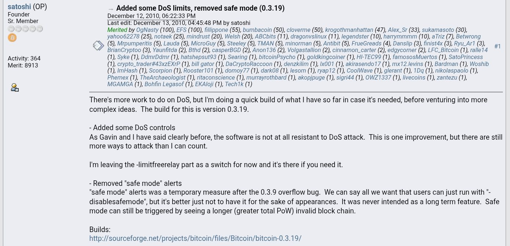

Tidak Ada Yang Percaya Bitcoin Pada Saat Itu
Tahun 2008. Dunia sedang terbakar akibat krisis keuangan global.
Di tengah kehancuran itu, seseorang (atau sekelompok orang), menggunakan nama samaran Satoshi Nakamoto mempublikasikan sebuah white paper: "Bitcoin: A Peer-to-Peer Electronic Cash System."
Respons komunitas kriptografi sangat pesimis.
Bukan tanpa alasan. Sebelum Bitcoin, puluhan proyek mata uang digital telah mencoba dan gagal (DigiCash, b-money, Bit Gold). Para ahli kriptografi sudah kenyang dengan klaim besar yang berujung pada kehancuran.
Namun kali ini ada yang berbeda.
Nick Szabo, arsitek konsep Bit Gold. Hal Finney, pengembang kriptografi veteran yang menerima transaksi Bitcoin pertama dalam sejarah. Adam Back, pencipta Hashcash yang menjadi fondasi algoritma proof-of-work Bitcoin. Mereka melihat sesuatu yang orang lain lewatkan.
Satoshi tidak hanya menulis kode. Ia membangun komunitas.
Forum Bitcointalk menjadi markas besar. Satoshi hadir aktif mendiskusikan, menjelaskan, menjawab pertanyaan teknis yang kompleks dengan kesabaran luar biasa. Bug dilaporkan. Bug diperbaiki. Kepercayaan dibangun satu commit demi satu commit.
Proyek ini tumbuh secara organik. Perlahan. Hati-hati.
Terlalu hati-hati, ternyata, untuk menghadapi apa yang akan segera datang.
WikiLeaks dan Bom yang Meledak
WikiLeaks merilis sebuah video berjudul "Collateral Murder".
Rekaman dari kokpit helikopter militer AS di Baghdad, 2007. Terlihat jelas: pasukan AS menembaki warga sipil, termasuk dua jurnalis Reuters, sambil menertawai korban yang berjatuhan.
Dunia terguncang.
Julian Assange (pendiri WikiLeaks) mendadak menjadi musuh publik nomor satu bagi pemerintah Amerika Serikat. Bukan hanya karena video itu. WikiLeaks kemudian membocorkan ratusan ribu dokumen diplomatik rahasia AS yang dikenal sebagai Cablegate, hasil kerja sama dengan Chelsea Manning, analis intelijen militer AS.
Reaksi Washington: brutal dan sistematis.
Seluruh rekening bank WikiLeaks diblokir. Visa, Mastercard, PayPal, semuanya menghentikan layanan ke WikiLeaks atas tekanan yang tidak pernah secara resmi diakui. Donasi dari seluruh dunia tidak bisa masuk.
WikiLeaks membutuhkan solusi. Mereka menemukan Bitcoin.
Untuk pertama kalinya dalam sejarah, Bitcoin memiliki use case yang nyata dan sangat publik: menerobos blokade finansial sebuah negara adidaya.
Satoshi Membaca Semuanya
Di Bitcointalk, komunitas bergembira.
Ini adalah momen validasi. Bukti bahwa Bitcoin bukan sekadar eksperimen akademis. Seorang pengguna bahkan mengajukan usulan secara eksplisit agar WikiLeaks aktif menggunakan Bitcoin. Pengguna lain bersemangat: "bring it on!"
Satoshi membaca semuanya.
Responsnya tidak mengandung euforia. Tepat pada 5 Desember 2010, ia menulis di Bitcointalk:
"Tidak, jangan 'ajak saya'. Proyek ini perlu berkembang secara bertahap sehingga perangkat lunak dapat diperkuat seiring berjalannya waktu. Saya menyampaikan permohonan ini kepada WikiLeaks agar tidak mencoba menggunakan Bitcoin. Bitcoin adalah komunitas beta kecil yang masih dalam tahap awal. Anda tidak akan mendapatkan lebih dari uang receh, dan tekanan yang Anda timbulkan kemungkinan akan menghancurkan kami pada tahap ini." Satoshi Nakamoto — Bitcointalk, 5 Desember 2010
Jelas. Tegas. Takut.
Bukan karena Satoshi tidak bersimpati pada perjuangan WikiLeaks. Melainkan karena ia memahami sesuatu yang komunitas belum pahami: Bitcoin pada 2010 adalah proyek yang sangat rapuh. Jaringannya kecil. Kodenya belum teruji secara nyata di skala besar. Satu serangan terkoordinasi dari lembaga pemerintah AS bisa mengakhiri segalanya dalam semalam.
Namun WikiLeaks tetap menerima donasi Bitcoin.
Dan media mulai meliput.
Sarang Lebah Diusik
Beberapa hari kemudian, sebuah artikel diterbitkan di PC World dengan judul: "Could the WikiLeaks Scandal Lead to New Virtual Currency?" ("Mungkinkah Skandal WikiLeaks Mengarah ke Mata Uang Virtual Baru?")
Bitcoin kini ada di radar media arus utama. Untuk pertama kalinya.
Dan Satoshi menulis komentar lanjutannya tentang WikiLeaks di Bitcointalk:
"Akan menyenangkan jika mendapatkan perhatian ini dalam konteks lain. WikiLeaks telah mengusik sarang lebah, dan kawanan lebah itu sedang menuju ke arah kita." Satoshi Nakamoto — Bitcointalk, 11 Desember 2010
Tiga belas kata itu, "Kawanan itu sedang menuju ke arah kita", mengandung segala yang perlu diketahui tentang apa yang dirasakan Satoshi saat itu.
Bukan kebanggaan. Bukan euforia. Ketakutan yang sangat nyata.
Faktor Gavin Andresen
Tepat ketika tekanan eksternal sedang memuncak, datang kabar dari dalam komunitas sendiri.
Gavin Andresen, salah satu kontributor terpercaya Bitcoin, pengembang yang bahkan pernah menciptakan Bitcoin Faucet dan mengisinya dengan 10.000 BTC dari kantongnya sendiri untuk mengenalkan Bitcoin kepada publik secara gratis, mengumumkan secara publik di Bitcointalk bahwa ia akan bertemu dengan CIA untuk mempresentasikan teknologi Bitcoin.
Bagi Satoshi, ini adalah titik kritis.
Gavin bukan orang jahat. Ia adalah pengembang yang berdedikasi. Namun pengumuman CIA itu meletakkan Satoshi di posisi yang tidak bisa ia toleransi.
Bayangkan posisi Satoshi pada saat itu:
- Identitasnya anonim, dijaga dengan sangat ketat.
- Ia menciptakan alat yang kini digunakan oleh organisasi yang sedang diburu FBI dan CIA.
- Dan sekarang, rekan komunitasnya akan bertatap muka langsung dengan badan intelijen AS untuk "menjelaskan" cara kerja teknologi tersebut.
Dalam tradisi cypherpunk, ini bukan hanya ketidaknyamanan. Ini adalah ancaman eksistensial.
Postingan Terakhir di Bitcointalk
12 Desember 2010.
Satoshi menulis postingan terakhirnya di Bitcointalk. Bukan tentang WikiLeaks. Bukan tentang CIA. Bukan tentang ketakutannya.
Tentang pekerjaan teknis yang belum selesai:
"Masih ada pekerjaan yang harus dilakukan pada DoS, tetapi saya sedang membuat versi awal dari apa yang sudah saya buat sejauh ini untuk berjaga-jaga jika diperlukan, sebelum mencoba ide-ide yang lebih kompleks. Versi yang saya buat adalah 0.3.19." Satoshi Nakamoto — Bitcointalk, 12 Desember 2010
Profesional hingga kata terakhir.
Ia tidak berpamitan. Tidak berpidato. Tidak menulis manifesto perpisahan yang dramatis. Hanya catatan teknis tentang perlindungan denial-of-service, dan kemudian, keheningan total dari forum publik mana pun.
Pesan Terakhir yang Pernah Ada
Bulan-bulan berlalu. Satoshi masih sesekali berkomunikasi secara privat dengan beberapa pengembang inti.
Hingga 23 April 2011.
Mike Hearn, pengembang yang membangun BitcoinJ, implementasi Bitcoin dalam bahasa Java, mengirim email kepada Satoshi dan bertanya apakah ia berencana kembali ke komunitas. Satoshi menjawab:
"Saya sudah beralih ke hal lain. Sekarang semuanya berada di tangan yang tepat bersama Gavin dan semua orang." Satoshi Nakamoto — Email kepada Mike Hearn, 23 April 2011
Beberapa hari kemudian, Satoshi mengirim email terpisah kepada Gavin Andresen, menyerahkan alert key jaringan Bitcoin: kunci kriptografis yang memungkinkan siapa pun yang memegangnya untuk menyiarkan peringatan darurat ke seluruh jaringan.
Ini bukan sekadar serah terima proyek. Ini adalah penghapusan diri secara sistematis.
Gavin kini memegang kunci. Satoshi tidak lagi memiliki apa pun yang mengikatnya pada Bitcoin.
Dan kemudian sebuah detail yang terasa terlalu besar untuk menjadi kebetulan: pada 27 April 2011, satu hari setelah Satoshi menyerahkan alert key, Gavin mengumumkan bahwa ia akan berbicara di markas CIA pada bulan Juni.
Satoshi menghilang tepat sebelum pengumuman itu.
Dompet yang Tidak Bisa Diselamatkan
Inilah bagian yang jarang dibicarakan secara serius.
Pada 2009–2010, Bitcoin Core tidak mengenal konsep seed phrase. Tidak ada 12 kata yang bisa ditulis di atas kertas. Tidak ada BIP-39. Tidak ada frasa mnemonik yang bisa dilaminating dan disimpan di dalam brankas.
Yang ada hanya satu file: wallet.dat, sebuah basis data terenkripsi berisi kunci privat. Tidak lebih, tidak kurang.
Electrum baru memperkenalkan konsep seed pada 2011, dengan format proprietary mereka sendiri (1.626 kata, bukan standar universal). BIP-39, standar seed phrase yang kini digunakan hampir semua dompet, baru dipublikasikan pada 2013. Hingga hari ini pun, Bitcoin Core tidak menggunakan BIP-39.
Sekarang bayangkan ulang skenarionya dengan jujur:
Anda adalah orang yang menciptakan alat yang kini digunakan oleh target utama FBI dan CIA. Identitas Anda anonim, namun investigasi forensik digital semakin canggih setiap harinya. Rekan kepercayaan Anda akan bertemu CIA bulan depan. Anda memegang sekitar satu juta Bitcoin, seharga ±$230.000 pada saat itu, yang tersimpan dalam sebuah file digital di komputer Anda.
Apa yang Anda lakukan?
Bagi seorang cypherpunk yang memahami cara kerja forensik digital lebih baik dari siapa pun, jawabannya bukan "sembunyikan." Bukan "enkripsi lebih kuat." Bukan "salin ke flash drive."
Jawabannya adalah: hancurkan segalanya.
Karena pada 2010, $230.000 tidak ada artinya dibandingkan kebebasan. Dan Satoshi tahu betul bahwa menyimpan wallet.dat dalam bentuk apa pun, di mana pun, adalah risiko yang tidak sepadan dengan nyawa.
Mengapa Koin-Koin Itu Tidak Akan Pernah Bergerak
Jika suatu hari dompet Satoshi bergerak, hanya ada dua kemungkinan yang layak dipertimbangkan secara serius:
Pertama: Satoshi masih hidup, masih memegang wallet.dat asli, dan memutuskan untuk muncul kembali setelah lebih dari 15 tahun, skenario yang semakin tidak masuk akal setiap tahunnya.
Kedua: Seseorang berhasil menjalankan algoritma Shor pada komputer kuantum dengan kapasitas yang cukup untuk memecahkan kurva eliptik secp256k1 (ECDSA-256), khususnya pada address P2PK era awal, di mana public key sudah terekspos langsung di blockchain tanpa lapisan perlindungan hash.
Untuk skenario kedua: komputer kuantum terbaik yang ada saat ini, IBM Flamingo dengan sekitar 4.158 qubit fisik dalam konfigurasi multi-chip, baru memiliki sekitar 0,032% dari kapasitas fisik yang dibutuhkan (estimasi ±13 juta qubit fisik untuk serangan 1 jam, berdasarkan Webber et al., 2022).
NIST memperkirakan komputer kuantum yang mampu mengancam ECDSA-256 tidak akan ada sebelum 2030–2040. Itupun jika perkembangan teknologi berjalan sesuai roadmap. Hambatannya bukan hanya jumlah qubit, melainkan tiga lapisan teknis yang harus diselesaikan bersamaan: jumlah qubit fisik, fidelitas per qubit, dan waktu koherensi.
Koin-koin itu diam. Sudah lebih dari 16 tahun. Dan kemungkinan besar, akan terus diam selamanya, bukan karena dijaga, melainkan karena kuncinya mungkin sudah tidak ada.

Julian Assange akhirnya bebas pada Juni 2024, setelah 12 tahun berlindung di Kedutaan Besar Ekuador di London dan 5 tahun mendekam di penjara Belmarsh, Inggris. Melalui kesepakatan plea deal dengan Departemen Kehakiman AS, ia kembali ke Australia sebagai orang bebas.
Chelsea Manning dibebaskan lebih awal pada 2017, setelah Presiden Obama meringankan hukumannya.
Bitcoin, yang pada Desember 2010 diperdagangkan seharga $0,23 per koin, kini menjadi aset dengan kapitalisasi pasar triliunan dolar.
Dan Satoshi Nakamoto? Tidak ada yang tahu.
Mungkin ia menonton semua ini dari suatu tempat, tanpa sepeser pun Bitcoin yang pernah ia tambang. Atau mungkin tidak ada lagi yang tersisa untuk ditonton, karena hard drive-nya telah lama menjadi debu.
Yang jelas: koin-koin itu diam.
Dan keheningan itu, dengan caranya sendiri, adalah jawaban yang paling jujur dari semua yang pernah dikatakan Satoshi.